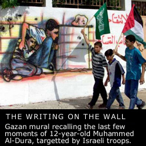

homepage


Personal Testimonies
This section offers eye-witness reports, and the personal accounts and reflections, of witnesses to the clashes. If you would like to add your own account to this page, please e-mail it to us.
25 February 2001
18 February 2001
7 February 2001
24 November 2000
16 November 2000
14 November 2000
4 October 2000 - present
Muna Hamzeh-Muhaisen's "Dear Diary"
from Dheisheh Refugee Camp
8 October 2000
7 October 2000
6 October 2000
Collected reports from late September/early October 2000
homepage